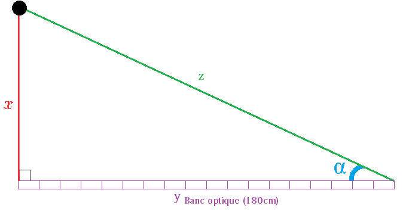

d) Le compas magnétique
Le compas magnétique indique continuellement le Nord (magnétique). Il permet au pilote de conserver un cap. Cependant, le compas à des limites. En effet, il perd en précision dès qu’il y a des variations de trajectoire. De plus il est sensible aux accélérations de l’avion mais également aux orages.
II- La radionavigation
Les instruments de mesures ne fournissent pas toutes les informations nécessaires au pilote pour se repérer dans l’espace. C’est pour cela qu’ils sont secondés par les instruments de radionavigation.
La radionavigation sert à géolocaliser l’avion en utilisant des ondes radioélectriques. Elle fonctionne à l'aide d'instruments placés en dehors de l'avion (des émetteurs placés le plus souvent au sol) et d’autres instruments placés dans l'avion (des récepteurs).
Un émetteur (dans notre cas radioélectrique) est un appareil électronique qui grâce a des antennes émet des ondes électromagnétiques. Son rôle est de transmettre des informations par les airs (comme l’heure à laquelle els signaux sont émis). L'utilisation des émetteurs radio est très réglementée.
Le récepteur radio, quant à lui, est un appareil électronique ayant pour but de capter et de décoder des ondes électromagnétiques émises par des émetteurs, afin d’extraire les informations qu’elles contiennent.
a) Le NDB et l'ADF
L'ADF (automatic direction finder) ou radio-compas correspond à un récepteur a l'intérieur de l'avion tandis que l'NDB (non directional beacon) correspond à la station au sol, émettant le signal.
- L'ADF est constitué d'une antenne, de plusieurs récepteurs, d'une boite de commande et d'un indicateur. Sa portée varie selon le matériel. Elle sera plus élevée le jour que la nuit.
- L'NDB est l'instrument de radionavigation le plus ancien. C'est un émetteur radioélectrique constitué d'une antenne aussi appelée station au sol. Il envoi un signal d'une portée de 185 à 350km. Ce signal est envoyé dans toutes les directions avec une fréquence comprise entre 190 à 1750 kHz. Les NDB sont le plus souvent installés par paires : un émetteur principal et un émetteur de secours si il y a un problème avec le principal.
Ces deux éléments, permettent de localiser l'avion dans l'espace. Afin de comprendre comment, vous pouvez vous reporter au modèle réalisé plus bas.
b) Le DME
Le DME, est un émetteur (au sol) qui a pour but de mesurer la distance qui sépare l'avion du sol. Pour cela le DME chronomètre le temps que met une impulsion radioélectrique pour faire l’aller/retour entre l'avion et l’émetteur. Cette distance est une droite entre la balise au sol et l'avion. Donc, quand l'avion survole la balise, la distance qui sépare l'avion de la piste est indiquée au pilote.
La portée du DME augmente avec l'altitude est se situe dans les environs de 200 Nm (370km) avec une précision aux alentours de 0,2 Nm.
c) le radio altimètre
Le radioaltimètre aussi appelé radar altimètre, mesure la distance qui sépare l'avion du sol. C'est une aide lors d'un atterrissage, par exemple.
La hauteur 0 correspond au moment ou la roue de l'avion entre en contact avec le sol lors de l'atterrissage. Quand l'avion est en mode : atterrissage automatique, c'est le radioaltimètre qui, après avoir évalué la hauteur réelle entre l'avion est la piste donne l'ordre au pilote automatique de réduire la vitesse pour que l’atterrissage se passe bien. En général un avion de transport possède 2 ou 3 radioaltimètres. Chaque équipement de radioaltimètre est composé d'un émetteur ou récepteur installé dans l'avion et de deux antennes une pour l'émission et une pour la réception placé à proximité des récepteurs ou émetteurs.
Ce système de navigation mesure la hauteur de l’avion en chronométrant le temps mis par les ondes électromagnétiques pour aller jusqu’au sol, se réfléchir et revenir vers les antennes de réception.
d) Modèle d'exprience résumant la radionavigation
Tous les instruments de radionavigation utilisent plus ou moins le même principe. On peut le résumer en utilisant un modèle simple. A l’aide d’un banc optique et d’une alidade, on souhaite mesurer la hauteur d’un objet (par rapport à la hauteur du banc optique).
Le banc d’optique (mesurant habituellement 180cm) est placé horizontalement. Ensuite, on dispose un objet en hauteur, au dessus de l’extrémité du banc optique, de manière à ce qu’il forme un angle droit avec celui-ci. Puis, avec l’alidade, on vise l’objet et on mesure l’angle α.
Etant dans un triangle rectangle, connaissant la longueur du banc optique et de l’angle α, on calcule aisément la hauteur χ de l’objet :
- tan(α) = χ / 180
- χ = 180 x tan(α)
